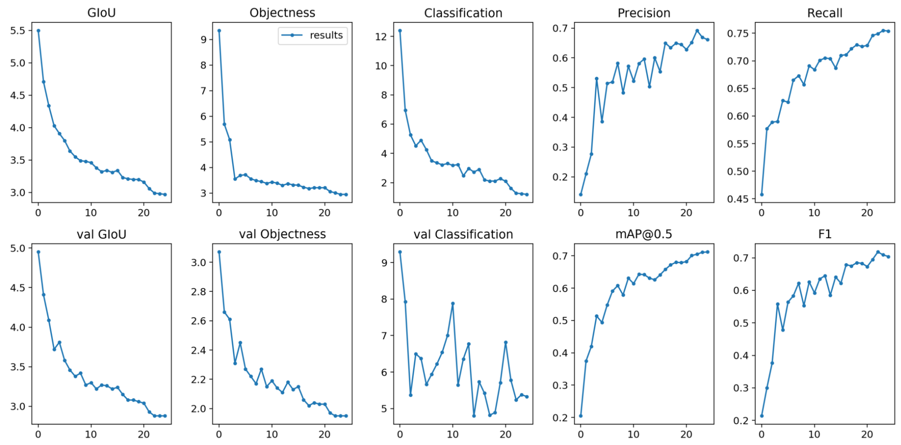

yolov3系列模型的调用配置
github地址https://github.com/ultralytics/yolov3（这里是框架的官网源码）
首先是关于 配置问题
我的环境是win10+python3.7+pytorch1.4+torchvision0.5+Anaconda
这里要说明一下，torch和torchvision版本不对应会出现此类问题
DLL failed
所以一定要找到相对应的torch和torchvision安装，没有清华镜像的话建议使用Anaconda构建环境，用conda安装，具体安装在pytorch官网上
再来是将框架clone到本地后的代码调试修改
进入根目录下的train.py
1 | parser = argparse.ArgumentParser() |
找到这部分代码，可能随着版本的更新会略有差异，其中有三行是使用哪种框架，数据集，预训练参数的默认值，更改为自己需要的内容，路径在根路径下hat.dat是我的数据集设置文本，里面包括了训练集和测试集的路径，训练类别，还有一些预定义的训练内容
cfg是框架
weight是预训练加载好的权重
如果 使用GPU进行训练，在device（就是最后一行）修改参数
yolov3与yolov3-tiny各方面实践对比
训练速度上，使用7000张训练集，预测小目标的效果，配置cuda9.2
训练时间：训练50个epoch对比，yolov3-tiny的速度是yolov3的4-5倍
从训练成本上看，使用谷歌云或百度云搭载yolov3模型进行训练的效果最佳，tiny版本本质上通过剪枝压缩删除了三分之一的非冗余中间层，容易造成漏判和误判，解决这类问题的思路最终也只有调整阈值，然而无论调整程度如何，最终还会出现多判的结果
训练结果上

这是使用yolov3训练25个epoch后的参数结果
而使用yolov3-tiny的训练结果
precision下降0.1-0.15
recall下降0.2-0.3
预测速度上，使用yolov3和yolov3-tiny预测同一张图片，比较一张图片中存在3个预测对象，速度差异可以忽略不计
对比了以上的实践结果得出结论：
预测小范围的目标，使用tiny版本减少了模型储存的体量，在连续预测的速度上占有优势，在考虑落地应用的成本上是性价比高的选择
预测中小范围的目标，使用yolov3原始版本在精确度上占优